User's Guide: CMM Validator
Contents:
- Overview
- Functionality
- User Interface
- Using the Validator
- Selecting Processing Options
- Running the Validator and Interpreting Output
- Editing a Manifest
- Overview
- Launching the Editor
- User Interface
- Saving Changes and Re-Validating
- Running Scripts
- Functionality
- Writing Command Scripts
- User Interface
1) Overview
1.1) Functionality
The
Validator
is intended to be used during the pre-processing of a Common Media Manifest (CMM)
file. When validating a manifest with this tool, the user may select what level of validation
checks will be applied. The levels are, in increasing level of rigor:
- Common Media Manifest (CMM):
- At a minimum, all manifests will be checked for conformance with the CMM
Schema (i.e., does the Manifest XML comply with the schema XSD).
- When the 'Constraints' option is enabled the manifest will also be checked for
conformance with all additional constraints and requirements that are not specified
via XSD but are identified in the full specification. This includes checking the
internal consistency of the manifest to verify that all internal references
are valid (e.g., if a PictureGroupID is referenced by an Experience
then a PictureGroup with that ID value is also defined). Checks of external
references (i.e., URLs of content staged on a CDN) are considered out of scope for
the Validator and are not tested.
- Manifest Information Model: Validates a Manifest file as conforming to the
specified structure (a.k.a. 'model') as defined by a specification's Information Model.
Validation against a Manifest Information Model is only performed on Manifests that have
passed all CMM validation checks without any errors.
- CMM Profile: A Manifest that has passed the IM validation stage may also be
checked for conformance with a specific profile. Profile validation requires the
selection of a specific profile (see Step #4 of Selecting
Processing Options for details).
1.2) User Interface
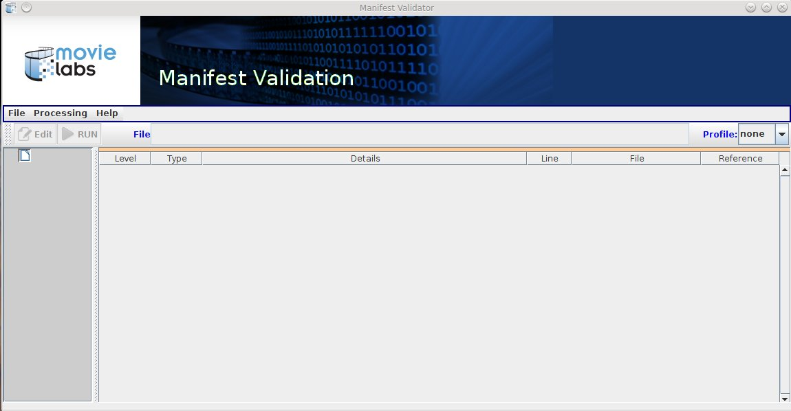
Figure 1: Validator UI
- Menus providing access to generic capabilities. The primary one is the "Processing"
menu. This allows the user to select the types of validation checks to be performed and the
level of logging output desired.
- The Manifest Tool Bar, which is used for:
- selection of one or more manifest files to be validated,
- selection of a Profile the manifest(s) are intended to support, and
- access to the integrated Manifest Editor.
- The Logging panel used to display and filter the messages resulting from the validation
process
2) Using the Validator
2.1) Selecting Processing Options
- The first step is to configure basic options and preferences (e.g., logging output).
This is done via the check boxes in the Processing menu (Fig 2). The user may:
- filter validation-related messages based on their severity and
- enable or disable informational and status messages.
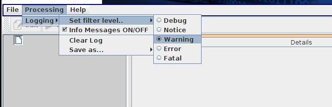
Figure 2: Validation Criteria Menu
- The next step is to select which files will be validated. There are three mechanisms
provided:
- Use the Open File... menu item to select a Manifest file
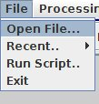
- The Recent.. menu item may be used to select from a history of
recently accessed files.
- A left-click on the 'File' text area (to the right of the
button) will pop open a File Chooser dialog.
If a directory is selected, all Manifest and MEC files found in the directory will
be processed. Alternatively a single file may be selected. Note, however, that if the
selected source is a directory containing multiple files, then all files will be
validated against the same set of options.
- Next the user may optionally identify an Interactivity Profile that the
manifest is intended to support. Note that for a Manifest compliant with CMM V1.5 or
later, any profiles specified are in addition to any Profile specified in the
Manifest file itself.
2.2) Running the Validator and Interpreting Output
Once all validation options have been set, the validation process may be executed via the
RUN
button. When the validation process completes, the results will be displayed in the Logging
panel (see Figure 3).
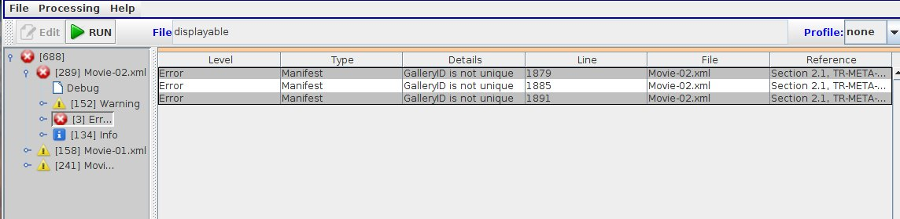
Figure 3: Validation Results
-
Fatal
: Indicates the inability to perform any processing on a file. For example, attempting to
process an Avails based on an unsupported version of the schema would result in a FATAL
log entry.
-
Error
: a problem that must be corrected. An example would be the absence of a required property
or the use of an unrecognized value for an enumerated type (e.g., an invalid language
code)
-
Warning
: a problem or inconsistency that does not have to be corrected but may be worth looking
into. For example, an Image in the Inventory is never referenced.
-
Notice
: indicates that a recommended Best practice was not followed (e.g. the use of
non-EIDR ID values for IDs)
-
Debug
: diagnostic output that should only be produced when requested by Movie Labs.
The last type of log entry is an
Info
message. These are used to provide a user with summary and status information about the file
being validated. The generation of Info messages may be enabled or disabled via the
Processing -> Logging
menu (see Fig 2 above).
Icons are used to indicate the most severe problem found in any branch of the message
hierarchy. For example, Figure 3b shows that only one of the three manifests that were
processed contains errors.
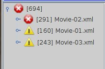
Figure 3b: Severity of Log Messages
The message display pane on the right provides a table showing all the messages in which
ever branch of the message hierarchy has been selected in the navigation pane. Some log messages
will provide additional information via tool tips. Where possible, this will include
references to specific sections of the documentation that cover the identified problem.
The displayed log messages may be sorted by means of a left-click on any of the column
headers (to sort by line number click on the 'Line' column header). Subsequent left-clicks will
reverse the sort order.
By right-clicking on the message display pane, a pop-up menu may be accessed (see Figure
4). Available actions are:
- show the XML associated with the error in an Editor window,
- clear the entire contents of the message log, or
- save to a file the currently displayed group of messages in CSV format
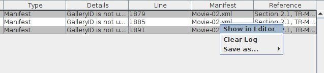
Figure 4: Message Log Pop-up Menu
The saving and/or clearing of the log file are simple operations and the user interface for
both of these is self-explanatory. Usage of the Editor is covered in detail in the next section.
2.3) Editing a Manifest
2.3.1) Overview
The CMM Validator includes a built-in XML Editor that may be used to correct any errors found
during the validation process. Note that this is not intended to provide a full-featured XML
authoring capability similar to those provided by tools such as XML Spy or Oxygen-XML. Rather it is
focused on providing an easy-to-use and integrated capability for quickly correcting errors and
then re-running the validation tests.
The Editor UI is implemented as a separate window (see Figure 5). Multiple Editor windows
may be opened at the same time, with each displaying a different Manifest file. Note, however,
that there may only be one Editor window for any given file.
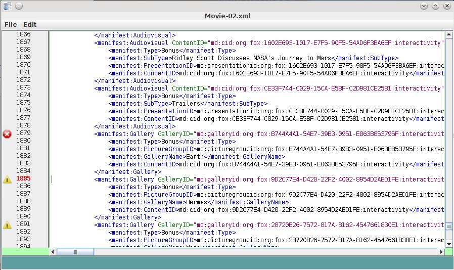
Figure 5: Manifest Editor
2.3.2) Launching the Editor
There are three ways to launch the XML Editor:
- As described in Section 2..2, an Editor may be launched by the context menu displayed
when the user right-clicks on a
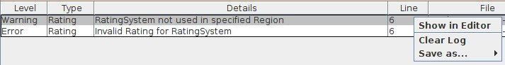
The editor will scroll the display to the line associated with the log entry.
- An Editor may be launched by right-clicking on the file name displayed in the navigation
pane:
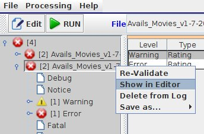.
- An Editor may also be launched using the EDIT button in the tool bar: 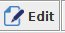
When an editor is launched for a specific Manifest:
- if an editor window for the Manifest file has not been previously accessed, a new
Editor will be created and displayed.
- if an editor for the Manifest file already exists but has been minimized (i.e.,
iconified) by the user, it will be opened and brought to the foreground.
- if an editor for the Manifest file already exists, it will scroll to display the
selected line in that file.
- if the log message used to access the editor does not have a specific location
associated with it, or the editor was launched using the Menu Bar, the current line will
be set to the first line in the Manifest.
2.3.3) User Interface
The Editor window has the following components:
- a text pane which uses colors for syntax highlighting,
- a menu bar providing access to the available editing functions
- line numbers displayed on the left edge that includes markers indicating errors and
warnings, and
- display of status messages across the bottom of the editor window.
These are shown in Figure 6.
The status messages are linked to the marker icons displayed along side the line numbers. A
single left or right click on a marker will result in the associate log entry being displayed in
the status panel.
2.3.4) Saving Changes and Re-Validating
To save changes, simply use either the pull down menu or the
<Ctrl>S
shortcut. Once the Manifest file has been saved the file may be re-validated.
The changed manifest may also be saved under a new name using the
Save As
menu option. If the Manifest is saved under a new name then the user must explicitly identify
the new manifest as the Validator's
Source
before it can be validated. Also it is important to remember that the existing Editor
window will still be displaying the original Manifest file. In order to edit the newly saved
file, the user must:
- select the new manifest as the source file to validate,
- run the validation, and then
- select one of the resulting log messages to open an Editor window for the new
manifest file.
3) Running Scripts
3.1) Functionality
Validation of multiple Manifests may be performed using scripts that can specify any of same
options and settings available thru the user interface. A script may easily be used to process a
set of manifests with specified sub-sets being handled using different options. All results are
automatically displayed in the GUI's log display but the script engine supports the option of
also writing the log to a file.
3.2) Writing Command Scripts
3.2.1) Structure
A script file is written using the JSON
syntax. The structure for a validation script is as follows:
3.2.2) Examples
The following is an example of script that validates two Manifest files plus any Manifests
found in a specific folder and then saves the message log in an output file:
{
"validate":{
"pathPrefix":"./MediaManifests/",
"checks":{
"contraints":"Y",
"bestPrac":"N"
},
"logging":{
"level":"Warning",
"output":"./scriptLog01.xml"
},
"manifests":[
{
"file":"si_tests/CMM_BBB_v0.1.xml",
"profile":"DemVal"
},
{
"file":"si_tests/CMM_Sita_v0.1.xml",
"profile":"none"
},
{
"file":"studio",
"profile":"IP-1"
}
]
}
}
The next two examples illustrate the use, or non-use, of the
pathPrefix
. In the first example, all relative paths are resolved using the present working directory as
the base. Both
foo1.xml
and
foo2.xml
should therefore be in the
pwd
.
{
"validate":{
"pathPrefix":"./Demos/",
"manifests":[
{
"file":"foo1.xml"
},
{
"file":"./foo2.xml"
},
{
"file":"/foo3.xml"
}
]
}
}
In the next example,
foo1.xml
and
foo2.xml
are still co-located but are now in in a sub-directory of the directory containing the script
file.
foo3.xml
should still be in the same location as the previous examples since it is specified using an
absolute path.
{
"validate":{
"manifests":[
{
"file":"foo1.xml"
},
{
"file":"./foo2.xml"
},
{
"file":"/foo3.xml"
}
]
}
}
3.3) User Interface
Selection and execution of a script is via the
Run Script..
menu entry. Script files are not selectable using the
File
text-entry field used to specify a Manifest file.
Once a script file has been selected the execution is automatic. It is recommended that the
contents of the log display be cleared prior to executing a script. Failure to do so will result
in any previous messages being included in the saved log file.
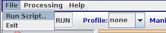
Figure 7: Script Selection and Execution
|